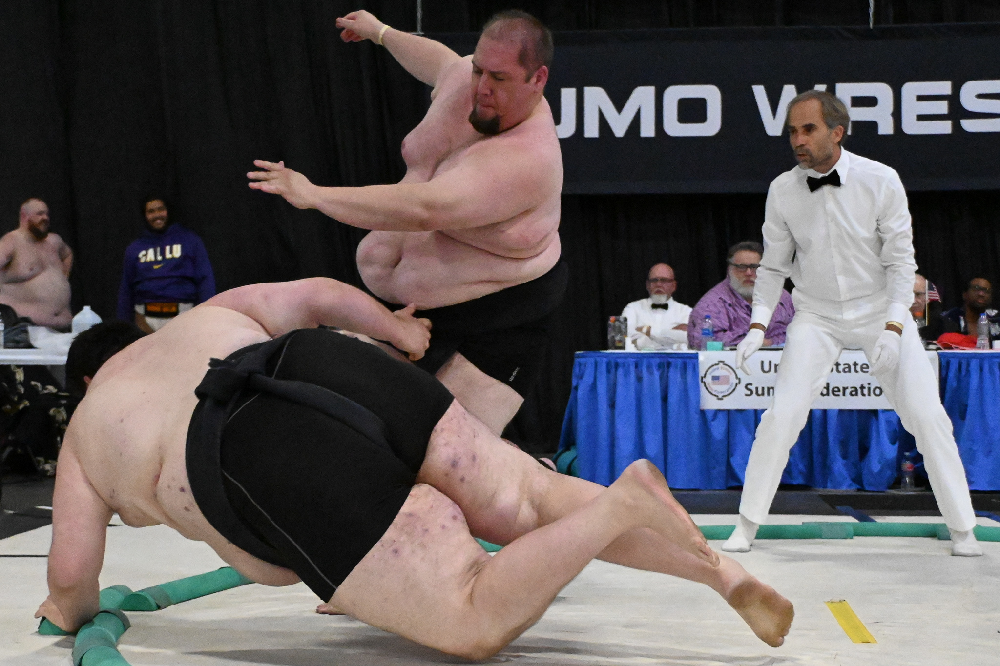

Welcome to my portfolio site! Feel free to browse my profile and resume.
I'm a fan of sumo wrestling, so enjoy the photos both here and in the gallery.
1 / 3

Sumo wrestlers in Hau'ula, Hawai'i
2 / 3
US Sumo Nationals, Salt Lake City April 2022
3 / 3

US Sumo Nationals, Salt Lake City April 2022
❮
❯